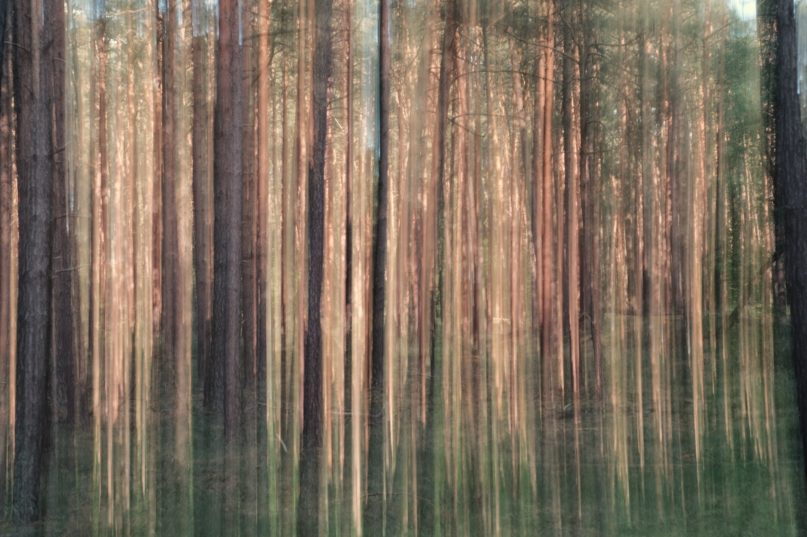
Felix Wach
Fotografie · WACH RECORDS
Ausgewählte Arbeiten
Fotografische Beobachtungen zwischen Natur, Landschaft, Struktur und Stille.
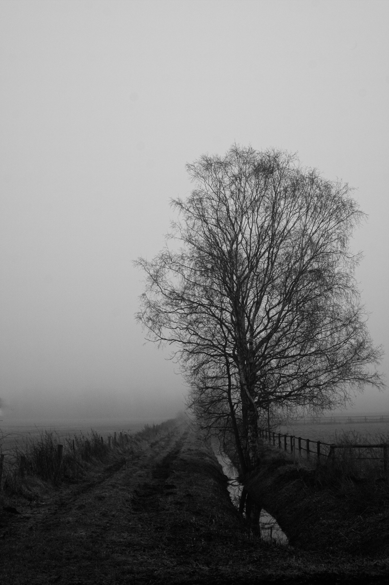
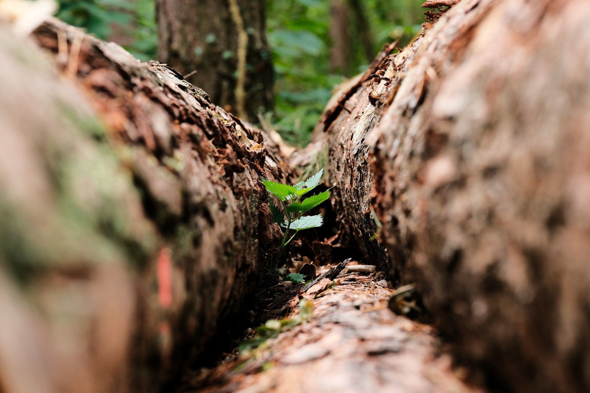
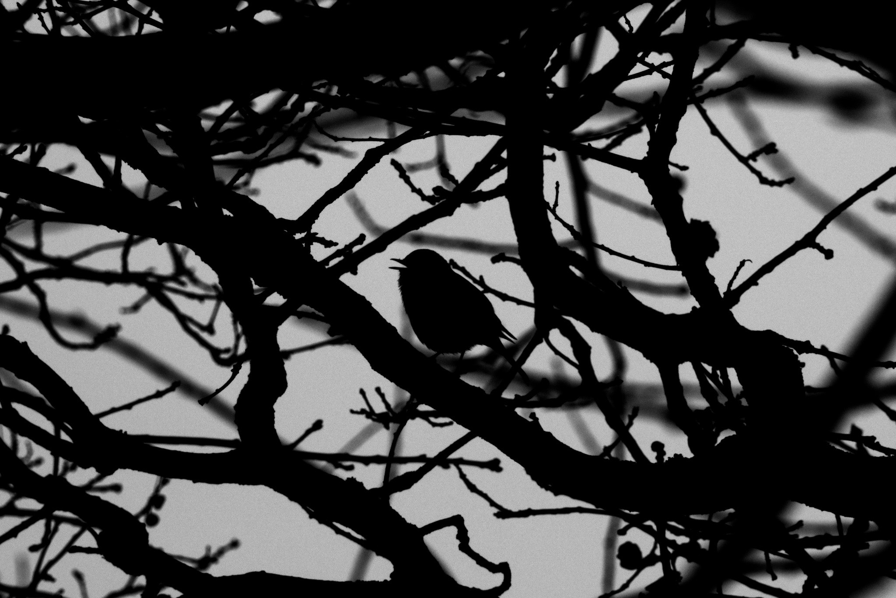
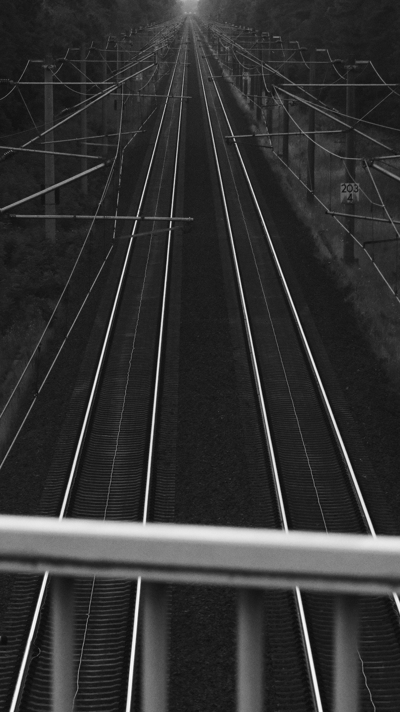
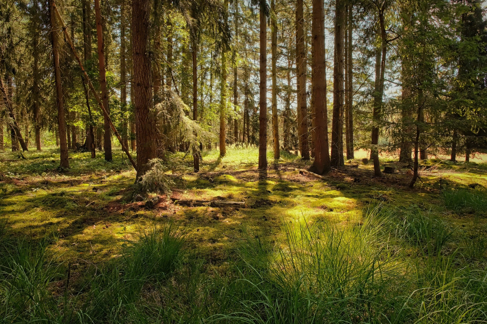
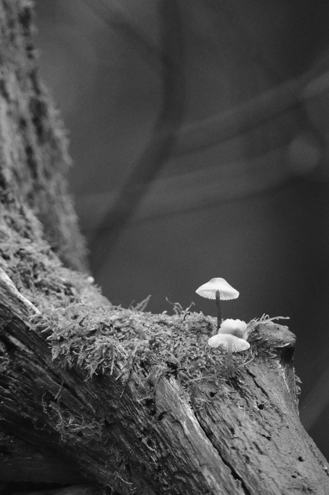
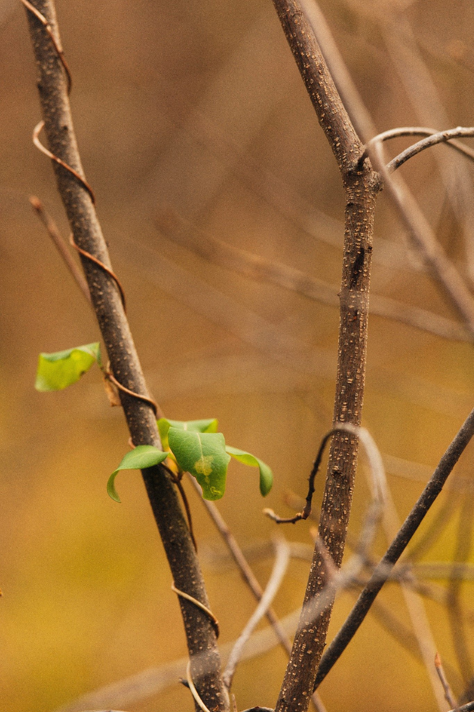
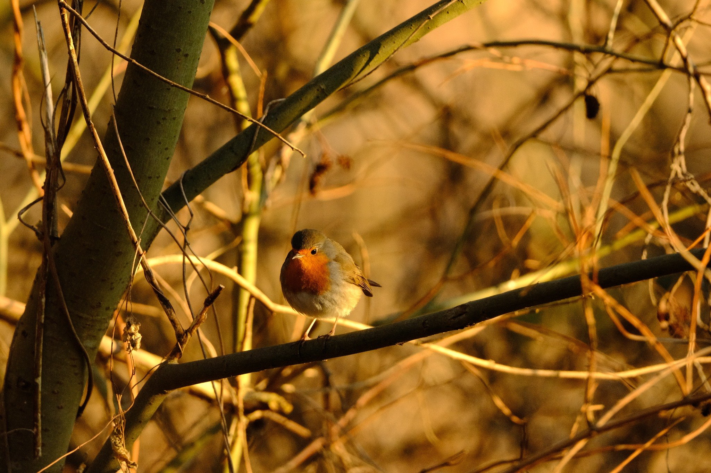
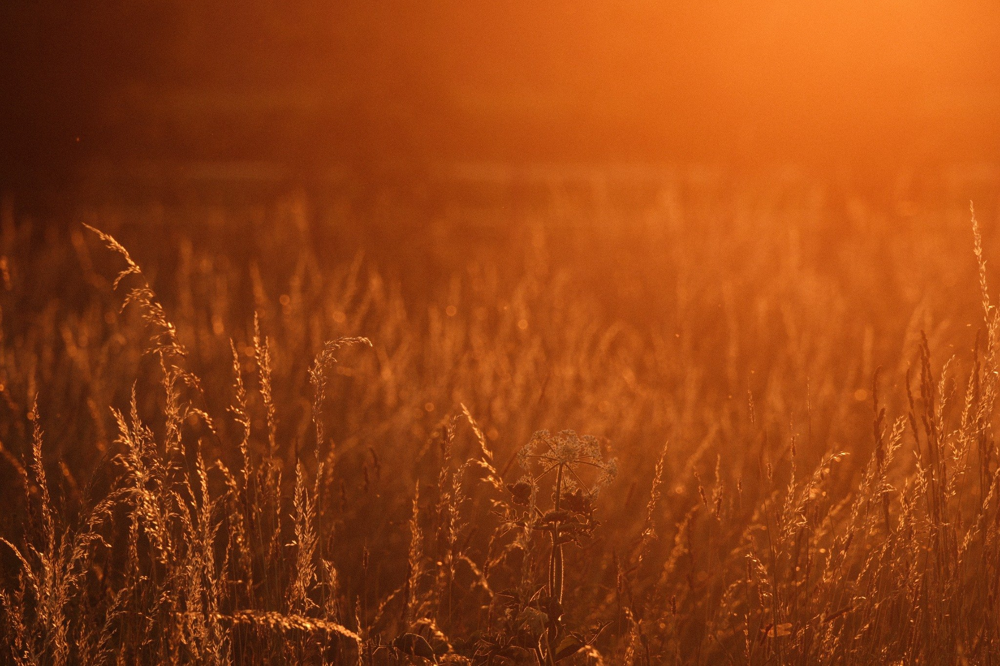
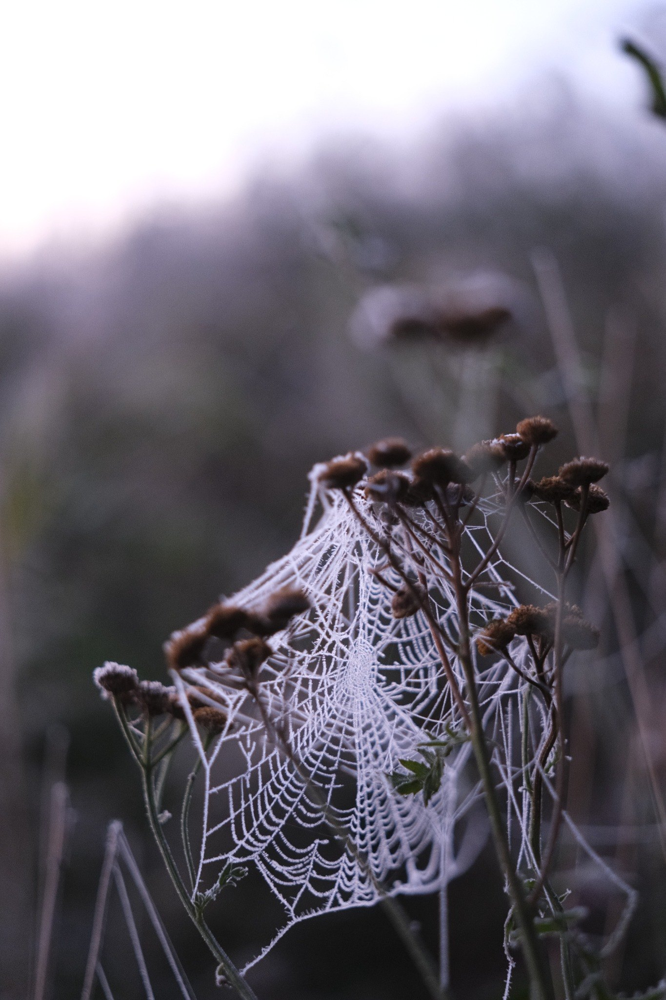
WACH RECORDS versteht Fotografie als Beobachtung: nah genug für Details, offen genug für Zusammenhänge.
Publikation
WACH RECORDS
Leiferde und das Viehmoor 2026
Eine fotografische Publikation von Felix Wach. Die erste Ausgabe verbindet ausgewählte Arbeiten in einem gedruckten, kuratierten Format.
Leiferde und das Viehmoor 2026 →WACH
RECORDS
RECORDS
Leiferde und das Viehmoor 2026 · Felix Wach